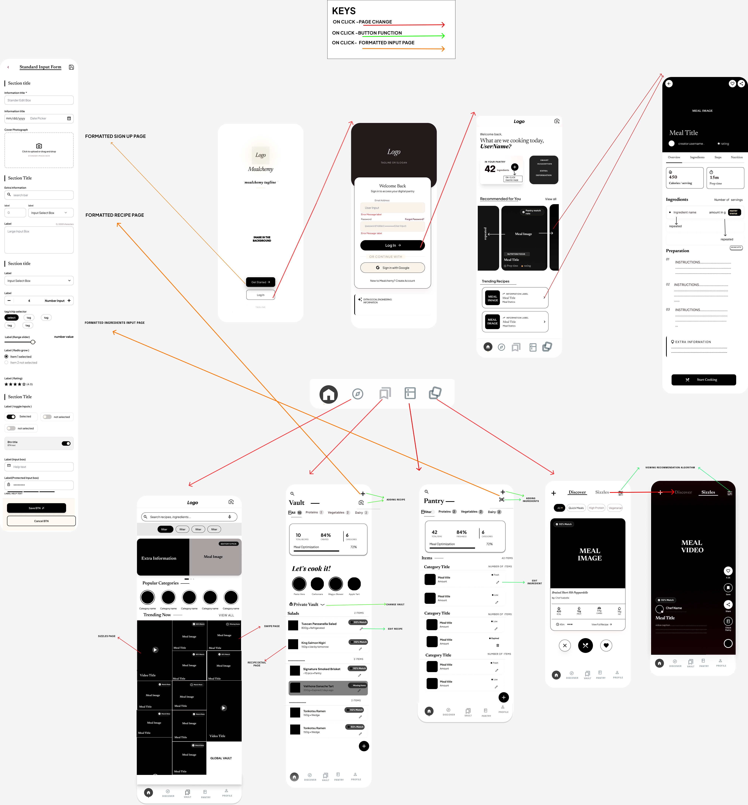
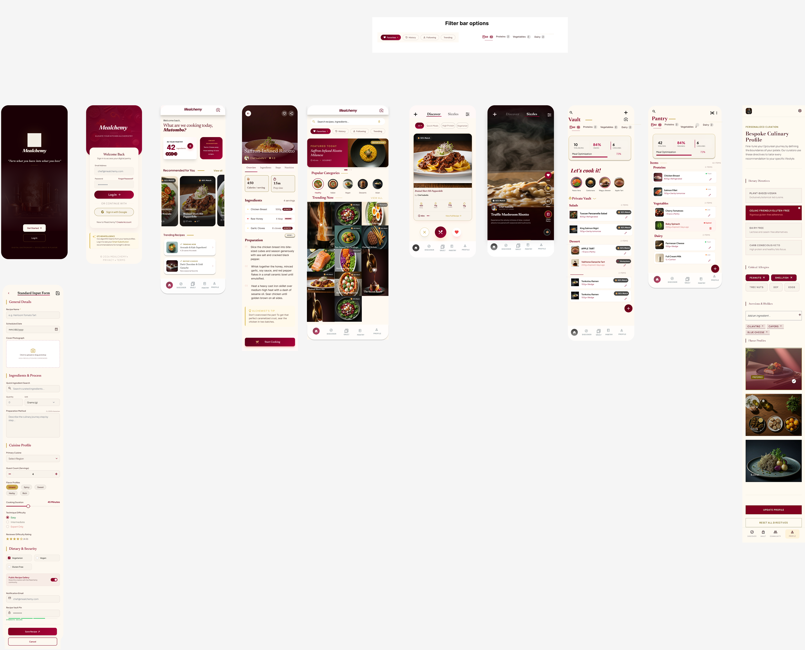
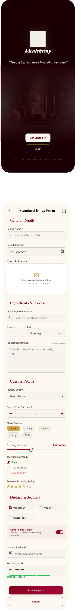
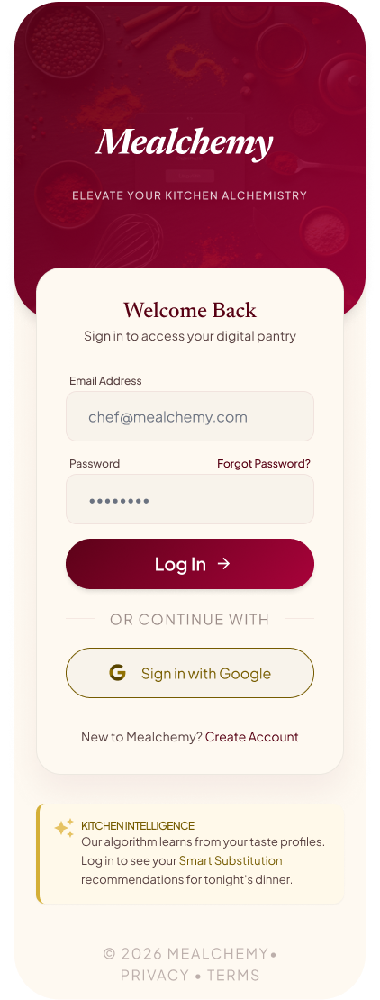
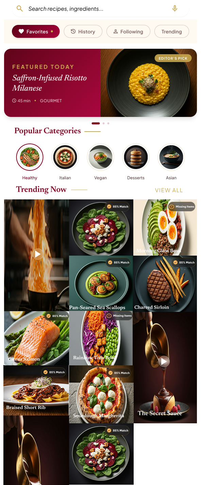
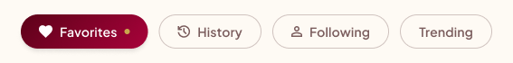
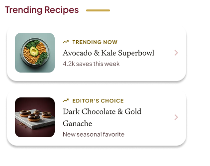

Wireframes document the page structure, screen hierarchy, component placement, and click paths across the Mealchemy product experience.
Page changeButton functionFormatted input page
Navigation Flow
The annotated flow shows how users move from onboarding into sign in, dashboard, recipe creation, discovery, pantry, vault, and the scrollable discovery page. Red arrows represent page changes, green arrows represent in-page button functions, and orange arrows represent formatted input pages.

Full navigation map exported from the wireframe board.
Complete Design Export
This board shows the higher-fidelity visual direction across the app screens, using the approved maroon, cream, and gold Mealchemy palette.

Complete design board: high-fidelity screens and reusable interface patterns.
Core Screen Mockups

Core Screen 01: Splash / WelcomeEntry screen with brand mark, tagline, and primary onboarding actions.

Core Screen 02: Sign InAuthentication screen with email, password, Google sign in, and helper content.Core Screen 03: DashboardHome hub with pantry count, smart suggestion, recommended recipes, and trending list.

Core Screen 04: DiscoverRecipe browsing screen with search, filter tags, categories, and image-led content.
Reusable Navigation 01: Top App BarBrand title, header spacing, and scanner shortcut.Reusable Navigation 02: Bottom NavigationPersistent primary navigation for Discover, Vault, Pantry, and Profile.

Reusable Navigation 03: Sticky Filter TagsCompact filter tag row for discovery filters and active states.Reusable Navigation 04: Discover TabsDiscover and scrollable discovery page switcher with clear selected state.

Reusable Pattern 05: Recipe List SectionVertical list pattern for recipes users can make immediately.Reusable Input 06: Standard Input FormRecipe entry form covering details, ingredients, cuisine profile, and security controls. Tap to view it larger.Reusable Input 07: Standard Input AlternateSecond export of the same form pattern for validating layout consistency. Tap to view it larger.